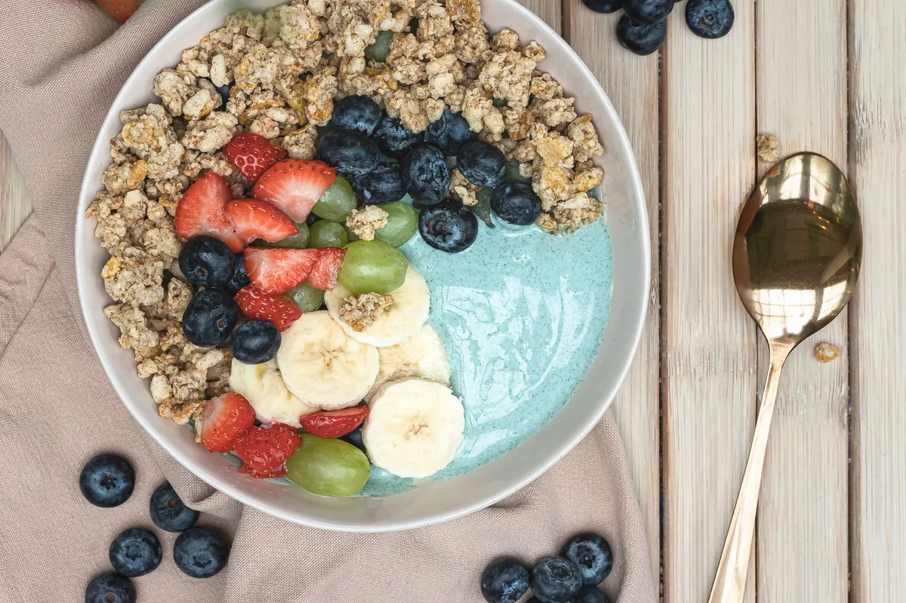
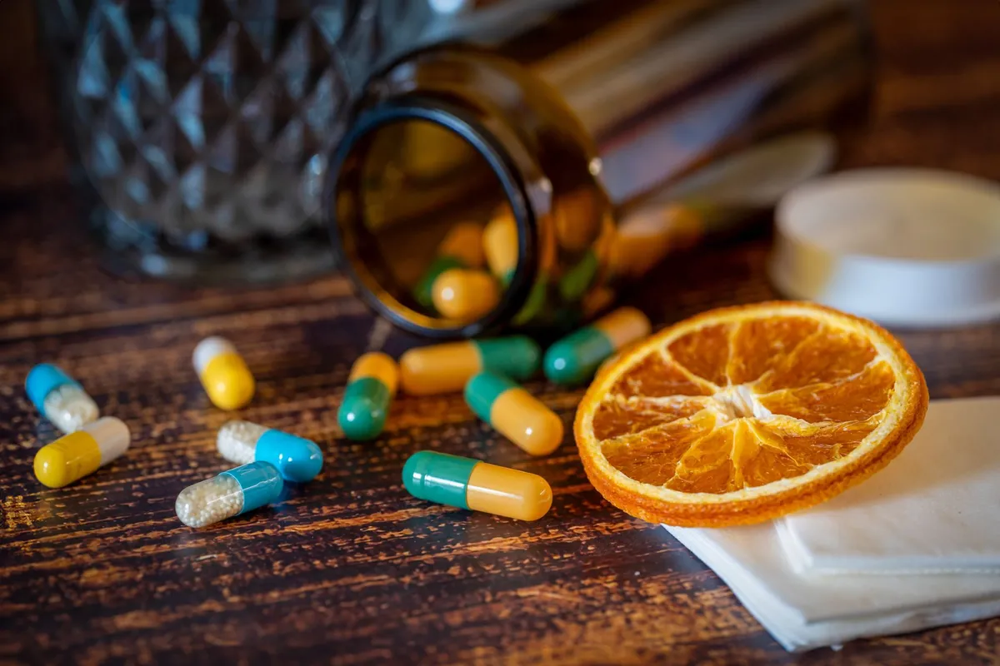

Spirulina: The Sustainable Superfood Tackling Vitamin B12 Deficiency

Key takeaways
- I remember staring at my plate, trying to make my vegetarian meals feel complete.
- The nagging thought of Vitamin B12 deficiency always lingered.
- Track what feels sustainable and adjust gradually.
I remember staring at my plate, trying to make my vegetarian meals feel complete. The nagging thought of Vitamin B12 deficiency always lingered. It felt like a constant battle, especially when I started exploring more plant-based options. I’d heard whispers about spirulina, this blue-green algae, but honestly, I was skeptical. Could something so… *algae-like* really be the answer to my B12 concerns and, dare I say, a more sustainable way to get it? Turns out, the science is pretty compelling, and Spirulina: The Sustainable Superfood Tackling Vitamin B12 Deficiency might just be the game-changer I, and maybe you, have been looking for.
For years, the primary sources of Vitamin B12 have been animal products. This leaves vegetarians and vegans in a tricky spot, often relying on fortified foods or supplements. But what if there was a natural, potent source that also happens to be incredibly good for the planet? Enter spirulina. This ancient cyanobacterium grows in both fresh and saltwater and is packed with nutrients. But its real superpower? Its potential to provide bioavailable Vitamin B12.
My journey with nutrition has been anything but linear. I’ve tried every fad, every restrictive diet, and frankly, I’m tired of the perfectionism. I just want to feel good, have energy, and know I’m making choices that are kind to my body and the earth. Spirulina fits that bill surprisingly well. It's not just about ticking a nutrient box; it's about embracing a food that offers a spectrum of benefits.
The buzz around spirulina often centers on its protein content and antioxidants, but its role in combating Vitamin B12 deficiency is where it truly shines for many of us. Unlike some plant-based sources that contain B12 analogues (which can actually interfere with B12 absorption), spirulina appears to offer active B12 forms. This is a huge distinction for anyone concerned about their B12 levels.
Beyond B12, spirulina is a nutritional powerhouse. It’s loaded with iron, which is another nutrient many plant-based eaters struggle to get enough of. I’ve found that when I consistently incorporate spirulina, my energy levels feel more stable, and I experience fewer of those afternoon slumps. It’s also rich in phycocyanin, a pigment-protein compound that gives spirulina its unique blue-green color and possesses powerful anti-inflammatory properties. This has been a revelation for my joint health, something I wasn’t even looking for but have gratefully received.
Sustainability is another massive win. Growing spirulina requires significantly less land and water compared to traditional livestock farming. It absorbs carbon dioxide and can even be cultivated in wastewater. This makes Spirulina: The Sustainable Superfood Tackling Vitamin B12 Deficiency a choice that benefits your personal health and the collective health of our planet. It’s a powerful example of how food can be both nourishing and environmentally responsible. I feel better knowing my dietary choices can have a positive ripple effect.
The 2-Minute Win
Add a teaspoon of spirulina powder to your morning smoothie or a glass of water. It’s a simple, quick way to boost your nutrient intake without a major change to your routine.
Pro Tip: Look for spirulina that is grown and processed in a controlled environment to minimize the risk of contamination. Some brands offer third-party testing, which is a great indicator of quality.
Integrating spirulina into my diet wasn't always straightforward. I’ve experimented with powders, tablets, and even flakes. The powder can have a strong taste, so I’ve found mixing it with something flavorful, like a berry smoothie or even a savory soup, works best for me. For those who are sensitive to the taste, spirulina tablets or capsules are a fantastic alternative. They offer the same benefits without the distinct oceanic flavor. You can find more information on incorporating nutrient-dense foods in this related healthy tip.
I’ve also found that consistency is key. It’s easy to fall off the wagon, but remembering why I started—for better energy, for B12, for a more sustainable lifestyle—keeps me going. If you’re looking for ways to stay consistent with your health goals, check out this another practical guide. It's about building habits that stick, not striving for impossible perfection.
For anyone looking to explore more plant-based nutrition, understanding your B12 status is crucial. Don't just assume you're getting enough. Regular check-ins with your doctor can provide clarity. This journey isn't about being perfect; it's about making informed choices that support your well-being. For a similar wellness insight, consider exploring the benefits of other sea vegetables.
Remember, Spirulina: The Sustainable Superfood Tackling Vitamin B12 Deficiency is a tool, not a magic bullet. It works best as part of a balanced diet and healthy lifestyle. If you're struggling to maintain your healthy habits, this stay consistent with this resource might offer some helpful strategies. And if you're keen on diving deeper into plant-based eating and its challenges, you can explore more health guides.
Educational only — not medical advice.
Disclosure: This page may contain affiliate links.
Recommended Reading
- Unlock Better Sleep: Quality Sleep Strategies for Optimal Health & Energy
- Boost Your Sleep Quality: Natural Remedies & Tips for Better Rest
- Is Your Toddler Eating Ultra-Processed Foods? The Shocking Truth About Toddler Meals
More in health

healthVitamin C & Colds: What the Science Really Says
Curious if Vitamin C actually helps with colds? We break down what the science really says about Vitamin C & colds, and
Read article →Mindful Eating Techniques for Optimal Gut Health and Digestion
Discover effective Mindful Eating Techniques for Optimal Gut Health and Digestion. Learn to slow down, savor food, and l
Read article →